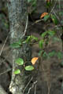
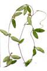
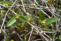
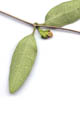
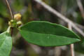
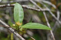
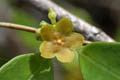
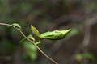

Common name in Telugu : Pala boddu teega








Diagnostic characters
Botany & morphology
Regeneration
Reproductive biology
Ecology
Distribution
Uses
Glabrous, twining shrubs with milky latex; stem base swollen; rhizomes fleshy. Leaves opposite. Flowers yellowish-white; fruits follicle, brown.
Leaves simple, opposite, elliptic - ovate or elliptic - oblong, apex acute to rounded, base cuneate to truncate, 1.5 - 4 x 1.2 - 2.8 cm, sub-fleshy, dark green above, pale green beneath, margin entire.
Inflorescence lateral corymbose cymes.
Flowers small, bisexual, regular; white or yellowish white; calyx 5 partite; corolla 5 - lobed, ovate, overlapping to right; stamens columns short, anthers broad with inflexed tip; pedicels long, twisted, stigma flat.
Fruits follicle, thick, ellipsoid, light yellowish, 3 cm long; seeds 1-cm long, dark brown, broadly ovate, flat, margin thick, winged.
Epigeal germination.
Pollination by insects and bees.
Frequent creeper in mangrove forests.
In India it occurs in Sunderbans, Mahanadi, Coringa in Andhra Pradesh, Andaman Islands.
Leaves and roots are said to be medicinal, tender fruits are edible, roots and follicles used to poison fish.
Top of the page